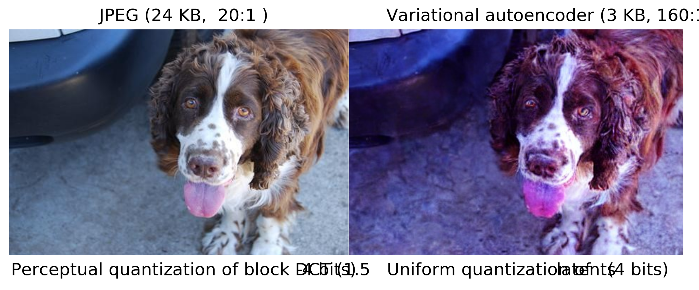

Transfer Learning from Lossy Codecs¶
Lossy compression¶
Most data are stored using lossy formats (MP3, JPEG)
1-4 bit subband quantization is typical
~1.5 bits per sample/pixel after entropy coding

Conventional training procedure¶
Still suffers from all of the downsides of lossy compression
Don’t get any of the benefits of smaller representation!

The neural codecs are coming!¶
Google: Soundstream/Lyra (2021)
Currently used in Google meet for low bitrate connections
Meta: Encodec (2022)

Neural image/video compression¶
Many patents have been filed. Expect standardized versions very soon!
